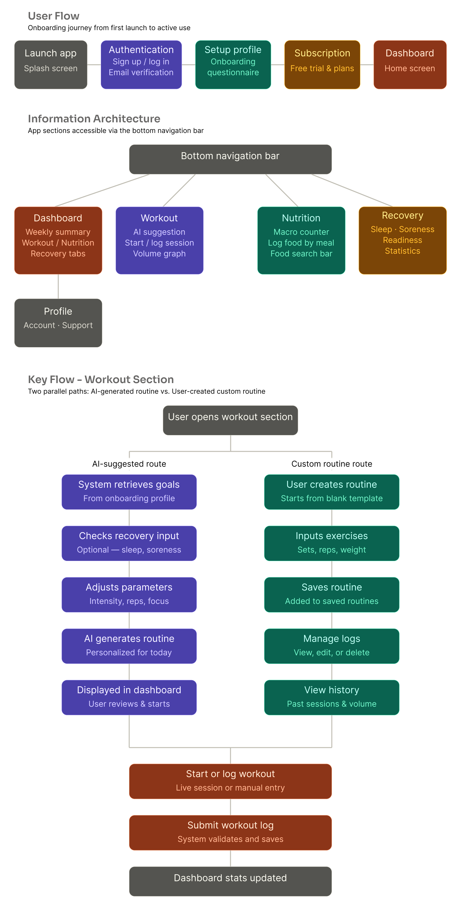

Workout, Nutrition and
Recovery Tracking App

FitCoach is an all-in-one fitness platform that helps users manage workouts, nutrition, and recovery in one personalized system. Instead of only showing numbers, FitCoach helps users understand their progress and make better decisions about training, food, and rest.
The platform helps users:
Many fitness apps focus on only one part of the user's fitness journey.
Some apps focus on workouts. Others focus on nutrition, recovery, or habit tracking. Because of this, users often need to use multiple apps to manage their health and fitness routine.
This creates a few problems:
The main issue was not the lack of fitness data. The issue was that users were not getting enough guidance from that data. When users feel confused, unsupported, or unsure what to do next, they can become discouraged and stop using the app.
The product goal was to create a fitness platform that brings workouts, nutrition, and recovery together into one clear experience. By giving users better guidance, FitCoach helps them stay consistent, understand their progress, and feel more confident about what to do next.


The main users are people who want to improve their fitness with more structure and guidance.
They may include:
These users do not only want to record what they did. They want to know what it means and what they should do next.
Solving this problem gives users a more complete view of their fitness journey and helps them make better decisions with less guesswork.
I approached the project by first understanding how users manage fitness across workout, nutrition, and recovery.
Competitor research
I studied existing fitness and recovery apps to understand how they present workout data, nutrition tracking, and readiness insights.
Feature planning
I broke down the key parts of the product, including workout creation, macro tracking, recovery scoring, and progress insights.
Recovery system research
I researched recovery-focused platforms such as WHOOP to understand how recovery, readiness, and health signals are presented to users.
Design exploration
I explored different visual directions before adapting the design to the client's preferred brand style.
Prototyping and review
I created key user flows and reviewed them through realistic scenarios and client feedback.
I began by mapping the main areas of the platform: workouts, nutrition, and recovery. Each area needed to work on its own, but also connect to the overall user journey.
For the workout experience, I focused on helping users create and follow structured training plans. For nutrition, I designed a flow that allows users to track macros and understand how their intake supports their fitness goals.
One of the most important parts of the project was the recovery system.
The client had the idea for recovery insights, but the exact logic had not been fully defined. I took initiative to research recovery platforms, study useful fitness metrics, and create a scoring structure that could turn different inputs into a clear recovery score.
I also used AI tools to help organize the formula and check which metrics were meaningful for the scoring logic. This helped turn an open-ended feature into a more complete part of the product.
For the visual direction, I first explored a high-energy style using orange and purple on a dark background. Later, the client requested a black and white direction to create a clean, premium, and distraction-free feel.
Primary
#1C1C1C
Secondary
#FFFFFF
Tertiary
#545352
To make the limited color palette work, I focused on:
The goal was to make the product feel confident, focused, and premium while still being practical for everyday use.
The biggest insight was that users do not just need more fitness data. They need help understanding what to do with it.
A workout log, nutrition tracker, and recovery score are useful on their own. But they become more valuable when they work together as one system.
Another important insight was that recovery can become a key decision-making tool.
If users know when their body is ready to train or when they should rest, they can make smarter choices and avoid pushing themselves without context.
These insights shaped the design decisions:
These insights helped shape FitCoach into a product that supports both progress tracking and better decision-making.

Solution ScreensThe final solution was an all-in-one fitness platform that gives users a clearer way to manage their training, nutrition, and recovery.
FitCoach allows users to:
The recovery system became one of the most important parts of the product. It helped move the app from simple tracking to guided decision-making.
Instead of leaving users to interpret everything on their own, FitCoach gives them a clearer understanding of their fitness condition and what actions they can take next.


The result was a more complete and personalized fitness experience.
The product helped create:
Users do not only track their fitness. They gain a better understanding of how their habits, recovery, and performance work together.

This project taught me the importance of turning unclear ideas into structured product features.
The recovery system started as an undefined concept, but through research, planning, and logic-building, it became a core part of the product experience.
What went well was the ability to connect different parts of the fitness journey into one system. The product became more useful because workouts, nutrition, and recovery were designed to support each other.
What could be improved is deeper testing with real users. With more time, I would test the recovery score with fitness users, review how easily they understand the insights, and refine the system based on their feedback.
This project strengthened my ability to design products that are not only visually clear, but also useful, structured, and aligned with user goals.